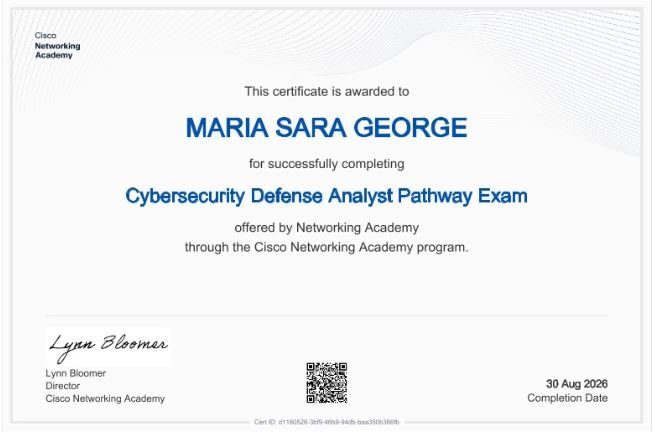
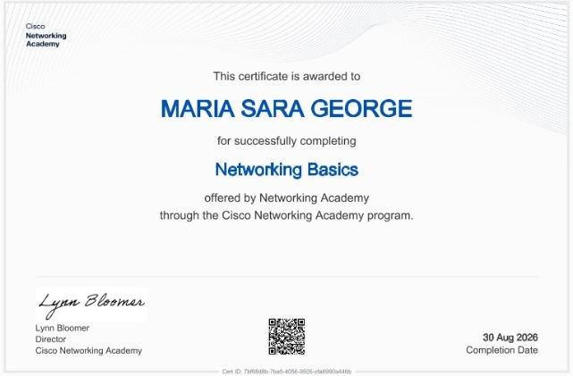
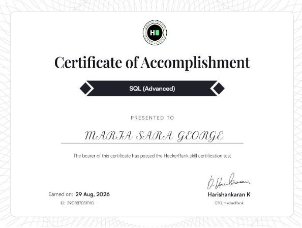

Hi, I'm Maria Sara George
I'm an IMCA student at Rajagiri College, and I love the space where technology and business meet. I'm exploring cybersecurity, product management and business analysis, and I enjoy public speaking and anchoring events. Have a look around!
About me
Hello! I'm pursuing an Integrated Master of Computer Applications (2025 to 2030) at Rajagiri College. I'm especially curious about cybersecurity, product management, business analysis and emerging technologies.
Outside the classroom, I'm always learning, and I care about leadership, problem-solving and communicating clearly. Public speaking and event anchoring are where I get to enjoy all of that together.
My goal is to lead where innovation meets strategy, turning good ideas into action and making a lasting impact along the way.
Technical
Professional
Certifications

Cybersecurity Defense Analyst Pathway Exam
Cisco Networking Academy

Networking Basics
Cisco Networking Academy

SQL (Advanced)
HackerRank skill certification

Foundations of Data Science, AI and Machine Learning
Grant Thornton Bharat, with Rajagiri College of Social Sciences

Data Science and AI (8-week course)
IIT Madras CODE, School Connect
Writing on technology
Critical Minerals: A Strategic Imperative for the Technology-Driven FutureGeopolitics and technology
I recently came across a news article about BRICS leaders calling for reliable supply chains for critical minerals, and it made me think about how closely our technological future is tied to resources we rarely talk about.
We often discuss artificial intelligence, electric vehicles, renewable energy and advanced technologies, but these innovations depend on critical minerals such as lithium, cobalt, nickel and rare earth elements.
In my view, the importance of these minerals goes far beyond mining and trade. They are becoming a matter of economic resilience and geopolitical influence. A disruption in their supply can affect entire industries, making excessive dependence on a limited number of suppliers a strategic risk.
This is where I believe BRICS cooperation becomes significant. Building diversified and reliable supply chains can reduce vulnerabilities while creating opportunities for countries to strengthen their own technological capabilities.
For India, this should be viewed not merely as a resource challenge, but as a strategic opportunity. Along with securing access to critical minerals, India should focus on domestic exploration, processing, recycling and technological innovation.
The technology race of the future will not depend only on who develops the smartest technologies. It will also depend on who secures the resources required to build them.
That, to me, is why critical minerals deserve to be treated as a strategic priority rather than simply another commodity.
Maria Sara George
When Technology and Organization Move in the Same DirectionResearch reflection
While studying the research paper Organizational and Technological Infrastructures Alignment, I found myself thinking about a simple question: Does technology really create value if an organization is not ready to work with it?
The paper by Anne-Marie Croteau, Simona Solomon, Louis Raymond and François Bergeron examines the relationship between organizational infrastructure, technological infrastructure and business performance. The researchers argue that technology should not be developed independently of the organization. Instead, both should evolve together through what they describe as infrastructure co-alignment.
The organizational side includes factors such as common vision, cooperation, empowerment, adaptability and learning, while the technological side focuses on user involvement, connectivity, distributed computing, flexibility and technology awareness.
What particularly stood out to me is that the paper does not present technology as the solution by itself. A powerful technological system can still fail to create meaningful value if the people, processes and organizational structure are not aligned with it.
In my view, this is increasingly relevant today, especially as organizations adopt AI and other emerging technologies. Investing in technology without preparing people and processes can create complexity rather than progress.
The researchers studied 104 organizations and used Structural Equation Modeling to examine the relationship. Their findings showed a positive and significant relationship between infrastructure alignment and business performance, with alignment explaining 37% of the variance in the performance construct.
From my perspective, the strongest idea in this research is that digital transformation is fundamentally an organizational process, not merely a technological one. Technology may provide the capability, but people, leadership, communication and adaptability determine how effectively that capability is used.
The paper also acknowledges limitations, including its low response rate and the need for further research through case studies and improved research instruments.
My takeaway. For me, this research changes the way I look at technology in organizations. The real question is not "How advanced is our technology?" but "How well does our organization align itself with what that technology can achieve?"
Because when technology and people move in different directions, even good technology can remain underutilized. But when strategy, people, processes and technology move together, technology becomes a driver of organizational growth rather than simply another investment.
Maria Sara George
Ethical Position on Cloning TechnologyEthics and science
Today we'll talk about the ethical position on cloning technology. But before that: "The real question is not what we can do, but what we should do." This simple idea perfectly captures the ethical dilemma surrounding cloning technology.
Cloning, as a modern scientific advancement, has brought remarkable benefits, especially in agriculture and food production. It has helped increase crop yield, improve nutritional quality, and develop resistance to pests and diseases. These advantages play a crucial role in addressing global hunger and improving human welfare.
However, the use of cloning also raises serious concerns. There are potential risks to human health, including unknown side effects and allergies. Environmentally, cloning may reduce biodiversity, disturb ecosystems, and even lead to the extinction of natural species. Ethical issues such as interference with nature and animal welfare further complicate the debate.
From an outcome-based ethical perspective, the moral acceptability of cloning is determined by a careful evaluation of its overall impact. This involves weighing its potential benefits, such as enhanced food security and scientific advancement, against the possible risks, including environmental disruption, health uncertainties, and ethical concerns. In this framework, the justification for cloning rests on its ability to promote the greater good while minimizing harm, ensuring that its application contributes positively to society as a whole.
In this context, cloning cannot be labeled as entirely good or bad. It is ethically acceptable only if its benefits outweigh its risks. Therefore, a balanced and regulated approach is essential to ensure that cloning technology contributes positively to society without causing long-term harm.
In conclusion, cloning should be guided by ethical responsibility and careful evaluation of its consequences. Science must remain under human control, ensuring that it serves humanity rather than dominates it.
Maria Sara George